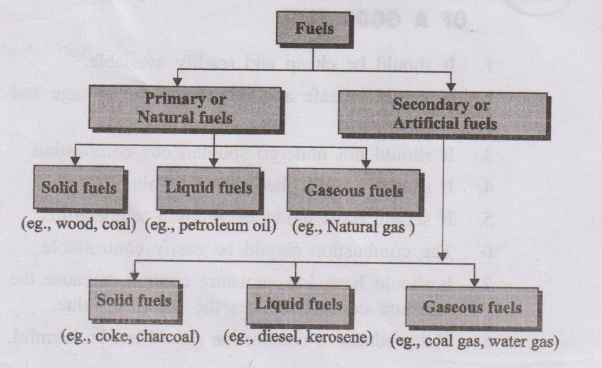
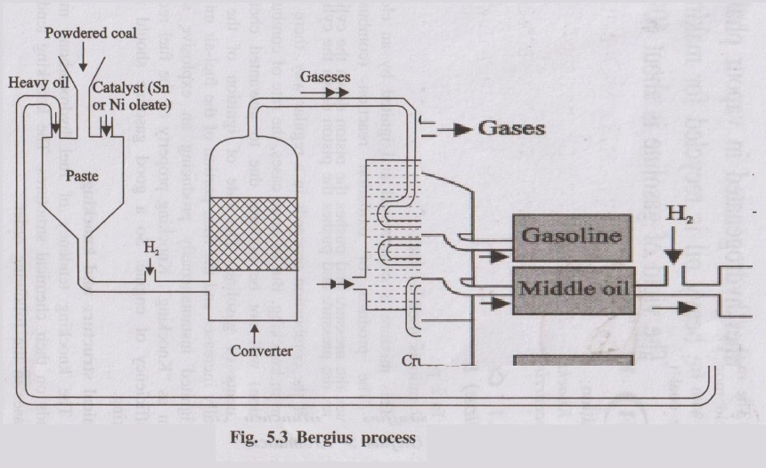
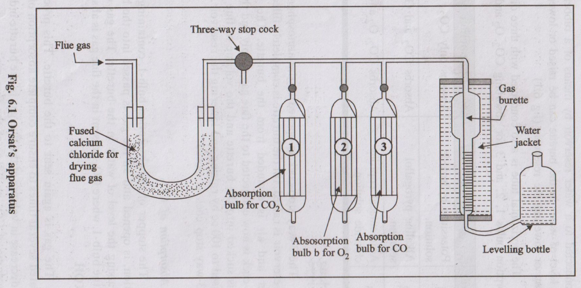
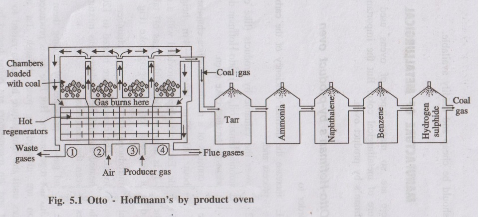

ENGINEERING CHEMISTRY – UNIT 4 (FUELS & COMBUSTION) – PART B
Classification & Proximate Analysis
1. (i) How fuels are classified? Give examples for each of them.
(ii) What is meant by proximate analysis of coal? What are the quantities estimated in this analysis and their significance? (13 Marks)
Part (i): Classification of Fuels
A fuel is a combustible substance containing carbon as the main constituent, which on burning with oxygen liberates a large amount of heat.

A. Based on Occurrence
- Primary fuels: Occur in nature as such.
- Examples: coal, crude petroleum, natural gas.
- Secondary fuels: Prepared from primary fuels.
- Examples: coke (from coal), gasoline/petrol and diesel (from petroleum), coal gas (from coal).
B. Based on Physical State
- Solid fuels: Coal, coke, firewood, briquettes.
- Liquid fuels: Petrol (gasoline), diesel oil, kerosene, fuel oil.
- Gaseous fuels: Coal gas, producer gas, water gas, natural gas, LPG, CNG.
Hence, fuels are conveniently classified as primary/secondary and as solid/liquid/gaseous fuels with suitable examples for each class.
Part (ii): Proximate Analysis of Coal
Proximate analysis of coal is the determination of the percentage of moisture, volatile matter, ash and fixed carbon present in coal.
1. Moisture Content
Procedure: About 1 g of powdered air-dried coal is heated at 100–105°C in a hot air oven for 1 hour, cooled and weighed.
Calculation:
\[
\% \text{ Moisture} =
\frac{\text{Loss in weight}}{\text{Weight of air-dried coal}} \times 100
\]
Significance:
- High moisture lowers calorific value.
- Consumes additional heat as latent heat of vaporisation.
- Increases transport cost.
2. Volatile Matter
Procedure: Crucible with moisture-free coal is covered with a lid and heated at 950 ± 20°C for 7 minutes in a muffle furnace. Loss in weight is due to volatile matter expelled.
\[
\% \text{ Volatile matter} =
\frac{\text{Loss in weight}}{\text{Weight of air-dried coal}} \times 100
\]
Significance:
- High volatile matter reduces calorific value.
- Coal burns with long smoky flame and may cause smoking problems.
- Coals with very high volatile matter are not suitable for metallurgical coke.
3. Ash Content
Procedure: Crucible with residue after volatile matter determination is heated without lid at 700 ± 50°C until constant weight is obtained. The residue is ash.
\[
\% \text{ Ash} =
\frac{\text{Weight of ash}}{\text{Weight of air-dried coal}} \times 100
\]
Significance:
- High ash content reduces calorific value.
- Ash causes clinker formation, obstructs air flow and heat transfer.
- Increases handling, transportation and disposal costs.
4. Fixed Carbon
Calculation:
\[
\% \text{ Fixed carbon} =
100 - \%(\text{Moisture + Volatile matter + Ash})
\]
Significance:
- Represents the solid combustible in coal.
- Higher fixed carbon → higher calorific value.
- Helps in designing furnace and fire-box size.
Proximate analysis is a quick industrial method to judge the usefulness of coal for different applications based on its moisture, volatile matter, ash and fixed carbon contents.
Ultimate Analysis of Coal
2. Give a detailed procedure of determination of various elements present in coal (ultimate analysis). (13 Marks)
Ultimate analysis of coal determines the percentage of its chemical elements – carbon, hydrogen, nitrogen, sulphur and oxygen (by difference), along with ash.
1. Determination of Carbon and Hydrogen
Principle
A known mass of coal is burnt in a stream of oxygen. Carbon and hydrogen are quantitatively oxidised to CO₂ and H₂O:
C + O₂ → CO₂
2H₂ + O₂ → 2H₂O
CO₂ is absorbed in KOH solution and H₂O is absorbed in anhydrous CaCl₂. Increase in weight of KOH and CaCl₂ tubes gives the masses of CO₂ and H₂O formed.
Calculations
Let, mass of coal sample = \( m \) g
Increase in weight of KOH tube = \( x \) g (mass of CO₂)
Increase in weight of CaCl₂ tube = \( y \) g (mass of H₂O)
\[
\%C = \frac{12}{44} \times \frac{x}{m} \times 100
\quad , \quad
\%H = \frac{2}{18} \times \frac{y}{m} \times 100
\]
2. Determination of Nitrogen – Kjeldahl’s Method
Principle & Procedure
- Coal is heated with concentrated H₂SO₄ in presence of K₂SO₄ (catalyst) in a Kjeldahl flask. Nitrogen in the coal converts into ammonium sulphate:
2N + 3H₂ + H₂SO₄ → (NH₄)₂SO₄
- The clear solution is then heated with excess NaOH. Ammonia is liberated:
(NH₄)₂SO₄ + 2NaOH → 2NH₃ + Na₂SO₄ + 2H₂O
- NH₃ gas is distilled and absorbed in a known volume of standard HCl.
- Unused acid is back-titrated with standard NaOH to know the amount of acid consumed by NH₃.
Calculation (General)
From the volume of acid neutralised by NH₃ and its normality, the mass of nitrogen is calculated and:
\[
\%N = \frac{\text{Mass of nitrogen}}{m} \times 100
\]
3. Determination of Sulphur
Principle & Procedure
- A known mass of coal is burnt completely in a bomb calorimeter.
- Sulphur in coal is oxidised to sulphate.
- The combustion products are extracted with water and treated with BaCl₂ solution.
- Sulphates are precipitated as BaSO₄, which is filtered, washed, dried and weighed.
Calculation
Let mass of coal = \( m \) g, mass of BaSO₄ = \( x \) g.
\[
\%S = \frac{32}{233} \times \frac{x}{m} \times 100
\]
(since molar mass of BaSO₄ = 233 and that of S = 32)
4. Ash and Oxygen
Ash
Ash percentage is determined as in proximate analysis by completely burning a known mass of coal and finding the mass of inorganic residue.
Oxygen
Oxygen is obtained by difference:
\[
\%O = 100 - \%(\text{C + H + N + S + Ash})
\]
5. Significance of Ultimate Analysis
- High C and H → high calorific value and better quality coal.
- Nitrogen has no calorific value; lower N is desirable.
- Sulphur causes corrosion and pollution; coal for metallurgical coke should have very low S.
- Higher oxygen usually lowers calorific value and increases moisture-holding capacity.
Ultimate analysis gives exact elemental composition of coal and is therefore essential for its proper utilisation, boiler design and pollution control.
Power Alcohol & Biodiesel
3. (i) How can power alcohol be helpful in fuel crisis?
(ii) Write a short note about biodiesel and its synthesis. (13 Marks)
Part (i): Power Alcohol and Fuel Crisis
Power alcohol is ethyl alcohol (absolute alcohol) used as a fuel in internal combustion (IC) engines, either alone or blended (5–10%) with petrol or diesel.
Manufacture of Power Alcohol
Step 1 – Manufacture of Ethyl Alcohol
- Molasses (by-product of sugar industry) containing sugars is fermented by yeast to produce ethyl alcohol.
- Rectified spirit (≈ 95–97.6% ethanol) is first obtained by distillation.
Step 2 – Preparation of Absolute Alcohol
- Remaining water is removed by:
- Distillation with benzene, or
- Using suitable dehydrating agents.
- Nearly 100% ethanol so obtained is called power alcohol.
Use in Fuel Crisis
- Blending 5–10% ethanol with petrol (gasohol) or diesel (E-diesel) reduces dependence on petroleum fuels.
- Ethanol is obtained from renewable biomass → helps conserve finite fossil fuels.
- Power alcohol has high octane number (~90) and improves anti-knock properties of petrol.
- Its oxygen content leads to more complete combustion with reduced CO and hydrocarbon emissions.
Advantages
- Cheaper than petrol in many countries.
- Increases octane number and engine efficiency.
- Reduces certain exhaust pollutants like CO and unburnt hydrocarbons.
Limitations
- Lower calorific value than petrol → modified engines required for high-ethanol blends.
- Higher surface tension causes atomisation and starting troubles in cold conditions.
- May oxidise to acetic acid and corrode engine parts if not properly handled.
Part (ii): Biodiesel and Its Synthesis
Biodiesel is a fuel consisting of mono-alkyl esters of long-chain fatty acids obtained from vegetable oils or animal fats by transesterification.
Need for Conversion
- Vegetable oils are mainly triglycerides with very high viscosity and high molecular weight.
- Direct use in diesel engines causes poor atomisation, incomplete combustion, deposits and ignition delay.
- Hence viscosity is reduced by chemical conversion to biodiesel.
Transesterification (Alcoholysis)
- Vegetable oil (triglyceride) is reacted with excess methanol (or ethanol) in presence of a catalyst (e.g., NaOH or KOH).
- Triglycerides are converted into mixture of fatty acid methyl esters (FAME) and glycerol.
- Biodiesel = mixture of these methyl esters; glycerol layer is separated.
Advantages of Biodiesel
- Derived from renewable resources (vegetable oils, animal fats).
- Biodegradable and non-toxic.
- Lower emissions of CO, unburnt hydrocarbons and particulates compared to diesel.
- Can be used in existing diesel engines as blends (e.g., B20 – 20% biodiesel, 80% diesel).
Limitations
- Gels at low temperature (poor cold flow properties).
- May absorb moisture from atmosphere and cause storage problems.
- Can soften some old rubber and plastic components of engines.
- Slightly higher NOₓ emissions than conventional diesel.
Power alcohol and biodiesel are important alternative fuels which can partially substitute petrol and diesel, thereby helping to tackle fuel crisis and reduce environmental pollution.
Bergius Process & Calorific Value
4. (i) Describe the synthesis of gasoline by Bergius process.
(ii) Define HCV and LCV. Calculate the Net and Gross calorific value of coal having the following composition: C = 85%, H = 8%, S = 1%, N = 2% and rest being ash. Latent heat of steam = 587 cal/g. (13 Marks)
Part (i): Bergius Process – Synthesis of Gasoline from Coal
Bergius process is a direct hydrogenation process in which finely powdered coal is hydrogenated at high temperature and pressure to produce liquid hydrocarbons (synthetic petrol).

Steps Involved
- Finely powdered coal is mixed with heavy oil to form a paste and a catalyst (e.g., tin or nickel oleate) is added.
- The paste is pumped into a converter along with hydrogen gas.
- Conditions: 400–450°C temperature and 200–250 atm pressure.
- Coal, being hydrogen-deficient, is hydrogenated to form higher saturated hydrocarbons, which then crack to form lower hydrocarbons in gasoline boiling range.
- Products are cooled and condensed to give crude oil.
- Crude oil is fractionally distilled to obtain gasoline, middle oil and heavy oil.
- Middle oil is again hydrogenated to get more gasoline; heavy oil is recycled to make fresh coal paste.
In Bergius process, about 60% of coal can be converted into gasoline, thus providing an important synthetic route to liquid fuels from solid coal.
Part (ii): HCV, LCV and Numerical Problem
Definitions
- Gross or Higher Calorific Value (HCV): Total amount of heat liberated when 1 kg of fuel is completely burnt and the products of combustion are cooled back to room temperature so that the steam formed is condensed.
- Net or Lower Calorific Value (LCV): Actual amount of heat available when 1 kg of fuel is burnt and the products are allowed to escape; steam remains in vapour form and the latent heat of condensation is not recovered.
Given Data
Coal composition: C = 85%, H = 8%, S = 1%, N = 2%, Ash = 4% (rest)
Latent heat of steam, \( L = 587 \) cal/g.
1. Calculation of Gross Calorific Value (HCV)
Using Dulong’s formula (O% = 0 here as remaining is ash):
\[
\text{HCV} = \frac{1}{100}\left[8080\,C + 34500\,H + 2240\,S \right] \text{ kcal/kg}
\]
Substituting values (C, H, S in %):
\[
\text{HCV} = \frac{1}{100}\left[8080 \times 85 + 34500 \times 8 + 2240 \times 1\right]
\]
\(8080 \times 85 = 686800\)
\(34500 \times 8 = 276000\)
\(2240 \times 1 = 2240\)
Total = \(686800 + 276000 + 2240 = 965040\)
\[
\text{HCV} = \frac{965040}{100} = 9650.4 \text{ kcal/kg}
\]
2. Calculation of Net Calorific Value (LCV)
\[
\text{LCV} = \text{HCV} - 0.09 \times H \times L
\]
where \(H = 8\)% and \(L = 587\) cal/g.
\(0.09 \times 8 = 0.72\)
\(0.72 \times 587 = 422.64\) kcal/kg
\[
\text{LCV} = 9650.4 - 422.64 = 9227.76 \text{ kcal/kg}
\]
\[
\boxed{\text{HCV} \approx 9650 \text{ kcal/kg}, \quad \text{LCV} \approx 9228 \text{ kcal/kg}}
\]
Ignition & Explosive Range
5. Explain the following: (i) Ignition temperature (ii) Spontaneous ignition temperature (iii) Explosive range. (13 Marks)
(i) Ignition Temperature
Ignition temperature of a fuel is the minimum temperature to which the fuel must be heated so that it burns continuously when a flame is applied.
- A good fuel should have a moderate ignition temperature – neither too low (causing fire hazards) nor too high (difficult to ignite).
- Below ignition temperature, the fuel does not catch fire even if a flame is brought near it.
(ii) Spontaneous Ignition Temperature (SIT)
Spontaneous ignition temperature (SIT) is the minimum temperature at which a fuel vapour or gas ignites spontaneously without the help of any external flame or spark.
- Also called self-ignition temperature.
- Below SIT, even though the fuel may be above its normal ignition temperature, external ignition source is needed.
- For safe storage and handling of fuels, SIT should be sufficiently high.
(iii) Explosive Range (or Flammable Limits)
The explosive range of a gaseous fuel is the range of concentrations of the fuel in air (between lower and upper limits) within which the mixture forms an explosive mixture.
- Below the lower limit – mixture is too lean (not enough fuel) → no explosion.
- Above the upper limit – mixture is too rich (too much fuel, not enough oxygen) → no explosion.
- Within the range – mixture can explode when ignited by a spark or flame.
Knowledge of ignition temperature, spontaneous ignition temperature and explosive range is essential for safe design and operation of fuel storage, transport and combustion equipment.
Knocking, Octane & Cetane Number
6. What is meant by knocking and describe octane number and cetane number. (13 Marks)
1. Knocking
Knocking is a sudden explosive combustion in the engine cylinder producing a sharp metallic sound, due to rapid pressure rise, which reduces engine efficiency and may damage the engine.
Knocking in Spark Ignition (SI) – Petrol Engines
- Fuel–air mixture (petrol vapour + air ≈ 1:17) is compressed and ignited by an electric spark.
- Ideally, combustion should proceed smoothly as a flame front.
- Due to the presence of undesirable hydrocarbons or improper conditions, the last portion of unburnt charge may suddenly auto-ignite, producing an explosive pressure wave – knock.
- High knocking tendency → low efficiency, overheating and damage to engine.
Knocking in Compression Ignition (CI) – Diesel Engines
- In diesel engines only air is compressed first; diesel is then injected into hot compressed air.
- There is a time lag between fuel injection and ignition – ignition delay.
- If ignition delay is long, a large amount of fuel accumulates and then ignites suddenly, causing diesel knock.
2. Octane Number (Octane Rating)
Octane number of a petrol is defined as the percentage of iso-octane present in a mixture of iso-octane and n-heptane which has the same knocking characteristics as the fuel under test.
- n-Heptane – very bad anti-knock fuel → octane number = 0.
- Iso-octane (2,2,4-trimethylpentane) – excellent anti-knock fuel → octane number = 100.
- Example: petrol whose knocking behaviour is same as mixture containing 80% iso-octane and 20% n-heptane has octane number 80.
Improving Octane Number:
- Blending with high-octane components (isomers, aromatics).
- Adding anti-knock additives (formerly TEL; now lead-free additives like aromatic phosphates, etc.).
3. Cetane Number (Cetane Rating)
Cetane number of a diesel fuel is defined as the percentage of cetane (n-hexadecane, C₁₆H₃₄) present in a mixture of cetane and α-methylnaphthalene which has the same ignition lag as the fuel under test.
- Cetane – very short ignition lag → cetane number = 100.
- α-Methylnaphthalene – long ignition lag → cetane number = 0.
- Higher cetane number → shorter ignition delay → smoother running diesel engine with less diesel knock.
Improving Cetane Number:
- Using straight-chain paraffins.
- Adding ignition improvers (dopes) like ethyl nitrate, iso-amyl nitrate.
Octane number is a measure of anti-knock quality of petrol in SI engines, whereas cetane number measures ignition quality of diesel in CI engines. Both are important for smooth engine performance with minimum knocking.
Orsat Flue Gas Analysis
7. Explain Orsat’s apparatus method for flue gas analysis. (13 Marks)
Flue gas analysis determines the percentage of CO₂, O₂, CO etc., in flue gases. Orsat’s apparatus is a simple laboratory instrument used for volumetric analysis of flue gases.

1. Construction
- A graduated gas burette (about 100 mL) surrounded by a water jacket to keep temperature constant.
- Three (or four) absorption pipettes containing suitable absorbents:
- P₁: KOH solution – absorbs CO₂.
- P₂: Alkaline pyrogallol – absorbs O₂.
- P₃: Ammoniacal cuprous chloride – absorbs CO.
- Pipettes are connected to burette by capillary tubes with stop-cocks.
- A levelling bottle containing water is connected to the bottom of the burette to adjust pressure and volume.
2. Procedure
Sampling
- Flue gas sample is drawn through suitable sampling tube and introduced into the burette.
- Volume is adjusted to a known value (e.g., 100 mL) at room temperature and atmospheric pressure by using the levelling bottle.
Determination of CO₂
- Gas from burette is passed into pipette P₁ containing KOH solution.
- Gas is shaken for some time so that all CO₂ is absorbed.
- Gas is brought back to burette and volume is readjusted to atmospheric pressure.
- Decrease in volume = volume of CO₂ in the sample.
Determination of O₂
- Remaining gas is passed into pipette P₂ containing alkaline pyrogallol which absorbs O₂.
- After shaking, gas is brought back to burette and volume is measured.
- Decrease in volume (from previous reading) = volume of O₂.
Determination of CO
- Gas is now passed into pipette P₃ containing ammoniacal cuprous chloride solution which absorbs CO.
- After shaking and returning gas to burette, volume is again noted.
- Decrease in volume (from previous reading) = volume of CO.
3. Calculations
If initial volume of flue gas sample is 100 mL, then:
- \(\% CO₂ = \frac{\text{Volume absorbed by KOH}}{100} \times 100\)
- \(\% O₂ = \frac{\text{Volume absorbed by alkaline pyrogallol}}{100} \times 100\)
- \(\% CO = \frac{\text{Volume absorbed by cuprous chloride}}{100} \times 100\)
- Remaining volume may be taken as nitrogen and other inerts.
Orsat’s apparatus gives quick and fairly accurate percentage composition of CO₂, O₂ and CO in flue gases, which is helpful in controlling combustion efficiency and minimising heat losses.
Metallurgical Coke & Otto-Hoffmann Oven
8. (i) What is metallurgical coke? How is it superior to coal?
(ii) Describe the Otto Hoffmann method for the manufacture of metallurgical coke. (13 Marks)
Part (i): Metallurgical Coke and Its Superiority
Metallurgical coke is a strong, porous, coherent form of carbon obtained by destructive distillation (carbonisation) of selected bituminous coals in the absence of air. It is mainly used in metallurgical operations like blast furnace smelting.
Requisites / Characteristics of Good Metallurgical Coke
- Purity: Low moisture, ash, sulphur and phosphorus contents – to avoid lowering calorific value and contamination of metals.
- High Porosity: Ensures intimate contact between carbon and oxygen, allowing complete and uniform combustion.
- High Mechanical Strength: Withstands weight of overlying charge and abrasion in blast furnace.
- High Calorific Value: Provides large amount of heat.
- Low Reactivity: Slow reaction with CO₂ produces higher temperatures in the furnace.
- Good Combustibility and Low Cost: Burns easily and economically.
Superiority Over Coal
- Coke has higher carbon and calorific value than coal.
- Less smoke, less volatile matter and more uniform combustion compared to coal.
- Strong and porous → creates permeable bed in furnace for gas flow, whereas coal forms clinkers and blocks air passage.
Part (ii): Otto–Hoffmann By-Product Oven Process

Construction
- Consists of a large number of tall, narrow silica chambers (coke ovens) arranged side by side.
- Each chamber is about 10–12 m long, 3–4 m high and 0.4–0.45 m wide.
- Each oven has:
- Charging holes at the top for coal feeding.
- Gas off-take arrangement.
- Iron doors at both ends for discharging coke.
- Between the ovens are vertical flues connected to regenerators for preheating fuel gas and air (regenerative system of heat economy).
Working
- Coal is charged into red-hot silica chambers through charging holes; doors are closed.
- Chambers are externally heated to about 1200°C by burning a mixture of preheated air and producer gas in interspaces.
- Coal undergoes high temperature carbonisation; volatile matter escapes as coal gas and tar vapours, leaving behind hot coke.
- Direction of gases in regenerators is periodically reversed to maximise heat recovery (regenerative heating).
- After 12–20 hours of carbonisation, the oven is cooled and coke is pushed out and quenched with water.
- Yield of coke is about 70% of coal charged.
Recovery of By-Products (Outline)
- Coal gas is cooled and passed through a series of washers and condensers to recover:
- Tar, ammonia, naphthalene, benzene, etc.
- Hydrogen sulphide is removed using moist Fe₂O₃.
- Final purified coal gas is used as gaseous fuel.
Otto–Hoffmann by-product ovens not only produce strong metallurgical coke but also recover valuable by-products like coal gas, tar, ammonia and benzol, making the process economical and efficient.
Carbon Emission & Footprint
9. Discuss the term carbon emission. Explain carbon footprint and list out the ways to reduce carbon footprint. (13 Marks)
1. Carbon Emission
Carbon emissions refer mainly to the release of carbon dioxide (CO₂) and other carbon-containing greenhouse gases (like CO, CH₄) into the atmosphere, primarily due to burning of fossil fuels (coal, oil, natural gas) in power plants, industries, transport and domestic activities.
- Excessive carbon emissions contribute to global warming and climate change.
- They also lead to ocean acidification and other environmental impacts.
2. Carbon Footprint
Carbon footprint is the total amount of greenhouse gases (expressed as CO₂-equivalent) emitted directly or indirectly by an individual, organisation, product or activity over a given time period.
- Includes emissions from:
- Electricity and fuel consumption.
- Transportation (vehicles, flights).
- Industrial and agricultural activities.
- Waste generation and its treatment.
3. Ways to Reduce Carbon Footprint
A. Energy Use
- Use energy-efficient appliances and LED lighting.
- Improve building insulation; switch off lights and devices when not in use.
- Prefer renewable energy sources (solar panels, wind energy) over coal-based power.
B. Transportation
- Use public transport, car-pool, cycling or walking whenever possible.
- Adopt electric or hybrid vehicles and maintain proper tyre pressure for fuel efficiency.
- Reduce unnecessary air travel; use virtual meetings where possible.
C. Fuel and Technology Choices
- Use cleaner fuels – natural gas, LPG, CNG – instead of coal and heavy oils.
- Promote use of alternative fuels like power alcohol and biodiesel.
- Adopt energy-efficient combustion technologies and waste heat recovery.
D. Lifestyle and Resource Management
- Follow 3R principle – Reduce, Reuse, Recycle.
- Reduce food waste; choose local and seasonal products to minimise transport emissions.
- Plant more trees and protect existing forests to increase CO₂ absorption.
By improving energy efficiency, shifting to renewable and cleaner fuels, adopting green technologies and sustainable lifestyles, we can significantly reduce carbon emissions and carbon footprint, thereby mitigating climate change.